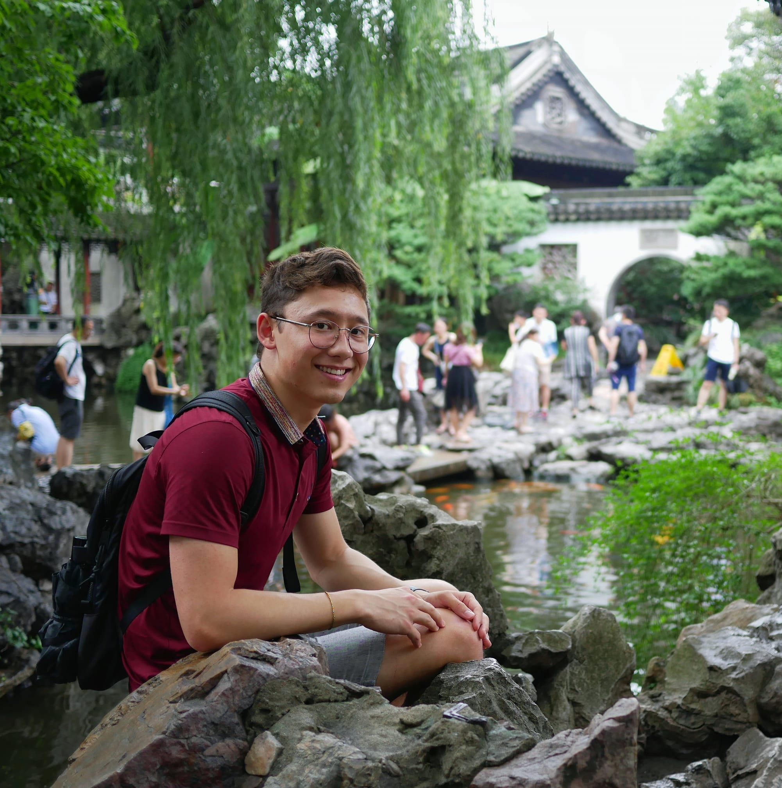

a little bit about us
What is ETK?
Engineering Test Kitchen is a non-profit consulting firm founded and operated by Washington University in St. Louis undergraduate, multidisciplinary, engineering students. We provide a team of skilled engineering undergrads and grads under the guidance of an experienced mentor to take on your company's projects.
Our Mission
Our mission is to connect engineering undergraduate and graduate students with real projects where they can learn, make meaningful contributions, and develop relationships with potential future employers.
Executive Team

Anton Salem | President
acsalem@wustl.edu
(440) 781-1114

Julian Neuman | Vice President
jwneuman@wustl.edu
(917) 406-6289

Jason Feibelman | Co-Chief Technical Officer
jfeibelman@wustl.edu
(914) 980-0095

Kristian Nilsen | Chief Operating Officer
kmnilsen@wustl.edu
(516) 434-9234
Kristian Nilsen | Chief Operating Officer
kmnilsen@wustl.edu
(516) 434-9234
Agneesh Dasgupta | Co-Chief Technical Officer
agneeshdasgupta@wustl.edu
(314) 630-2523
Projects
Each year we pick projects that will provide value to both the company as well as the students that are working on them. The types of project chosen vary from year to year, so if our current projects don't interest you, apply anyway‚ we may have a perfect fit for you!
-
Spring 2020 Industry: Medical Devices
Principal Investigator(s): Dr. Mary Ruppert-Stroescu (WashU) and Dr. Minh Pham (Oklahoma State University)
Project: In this project, the ETK team will work with professor Mary Ruppert-Stroescu, in the Sam Fox School, helping develop a wearable EKG monitor. The garment is fabricated entirely from conductive textiles. With conductive fabric patches acting as EKG electrodes and conductive threads as wires. As engineers we aid in solving many of the technical challenges faced: materials testing, the interface between solid electronics and textiles, software development, 3D modeling, and circuit design. Additionally, we will be adding a respiratory monitor as well as an accelerometer for position monitoring. Preferred experience: Sensor hardware, Matlab, Arduino, circuit design, materials testing -
Spring 2019 In this project, the ETK team will collaborate with an Accenture data team on a cloud platform to be used in addressing structural issues in the historically troubled Hayden’s Rectangle area of St. Louis. The team will build interface for social workers to submit data collected from residents. A dashboard will be created to compile collected data with other databases to generate insight in crime and poverty reduction efforts. Preferred experience: Full-stack software development, geospatial data analysis, database management
-
Spring 2019 In this project, students will have the opportunity to work with WUSM department of Radiation Oncology. The goal of this work is to use mm-wave imaging technology to localize radiation oncology patients consistently over a round of radiotherapy. Consistent localization is important for delivery of the radiation dose to the proper target while minimizing impact on surrounding organs. One of the components of this project will be designing a GUI that conveys information about the patient’s position to the user. Texas Instruments has already designed several GUIs that display this information (see Figure 1), however the format is not suitable to our application. Rather than a scatter plot and range profile, we would like to see the patient’s measured position in several coordinate directions, with two error bars representing relatively large displacements (on the order of millimeters) from the starting position. When the patient’s displacement exceeds these error bars, the system will then alert the user. A GUI used by AlignRT (an optically-based patient localization technology) is shown in Figure 2. We are in need of individuals who can design a GUI of this general type. While not a requirement, it will be helpful if the individuals are somewhat comfortable with JavaScript—this is the programming language used by TI, and it may be beneficial to look at their GUI’s source code that shows how they are stream processing the data
-
Fall 2018 Students will have the opportunity to work with Joseph C. Sansone Company, a nationally recognized real estate firm. The ETK team will create an application that uses vision recognition services for document and text matching. Specifically, the team will work with image and document classification, pattern recognition, image analysis, Optical Character Recognition (OCR), Optical Word Recognition (OWR), Intelligent Character Recognition (ICR), 3D and 2D Code recognition (Bar codes, QR, etc.) content based image retrieval (CBIR) and Query by Image (QBI). Students will be able to work closely with industry professionals to develop this solution. Additionally, they will develop valuable experience in cutting-edge, industry technologies. They will also come out with a professional grade project to list on their resumes. Preferred qualifications include experience with a scripting language such as Python and experience working with databases (MySQL, MongoDB, etc. Experience with vision recognition services is also a huge plus.
-

Spring 2018 In this project, students will work with Pirooz Eghtesady, MD, PhD, the Cardiothoracic Surgeon-in-Chief at the Wash U School of Medicine and St. Louis Children's Hospital. The team will work to create a medical device to provide circulatory support in univentricular infants. Specifically, infants' hearts are put under significant strain during surgery and often times need functional support. This device will be inserted into one side of the heart, connect to an external pump, and then reconnect to the aorta on the other side of the heart. Ideally, this device will be able to reside within the patient for an extended period of time without causing any impairments.
-
Spring 2018 Students will have the opportunity to work with Prattle Analytics, a startup that uses sentiment analysis to predict interest rate shifts. The ETK team will create an application that uses parallel computing for efficient data processing. Students will be able to work closely with industry professionals to develop this solution. Additionally, they will develop valuable experience in cutting-edge, industry technologies, including PostgreSQL, MongoDB, and AWS Lambda. They will also come out with a professional grade project to list on their resumes.
-
Spring 2017 Team members will be working for the WashU Office of Technology Management (OTM), testing the viability of a patent for biofoam sheets for water purification. Members will build a solar still device and conduct field testing to further understand the engineering demands of the product. Qualifications: Lab experience is a plus. Chemical Engineering and MEMS majors are encouraged to apply
-

Spring 2017 The group will work on a machine learning module for Clever Analytics. This application will use supervised machine learning algorithms to train a model and then label text, allowing users to glean insights from large sets of unstructured data. Qualifications: Object-Oriented programming experience is required. Experience with Python and MongoDB is preferred, but not required. Prior experience with machine learning and natural language processing is a big plus, but students will have the opportunity to learn during the project
-

2013-2014 A team worked with Prozess Pizza Technologie to do a heat transfer analysis of their product. Prozess Technologie is a St. Louis-based technology company designing, building, and implementing spectroscopic solutions for process measurement and control in multiple manufacturing sectors.
-

2013-2014 A team worked with the Catholic Student Center to do an HVAC analysis of their buildings.
-

2014-2015 A team worked with Tech Manufacturing to refine an existing computer code that models the behavior of equipment performing a manufacturing process. Tech Manufacturing, LLC is a Missouri-based supplier of milled parts to the aerospace industry.
-

2014-2015 A team worked with Project MEGSSS to develop a code-based optimization algorithm. Project MEGSS (Mathematical Education for Gifted Secondary School Students) is a nonprofit organization that offers advanced mathematics classes for talented students.
Current Projects
Past Projects
Contact Us
1 Brookings DriveSt. Louis, Mo 63130
engineeringtestkitchen.org